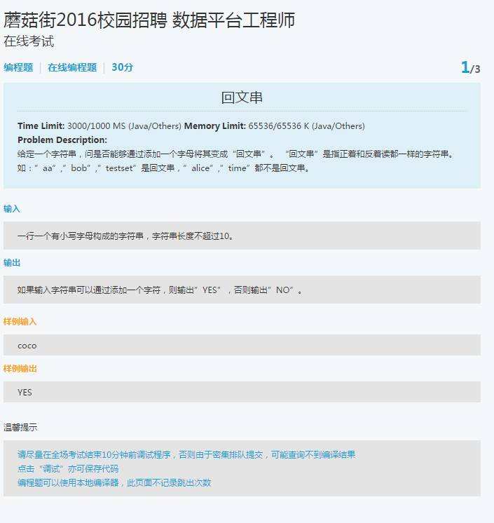
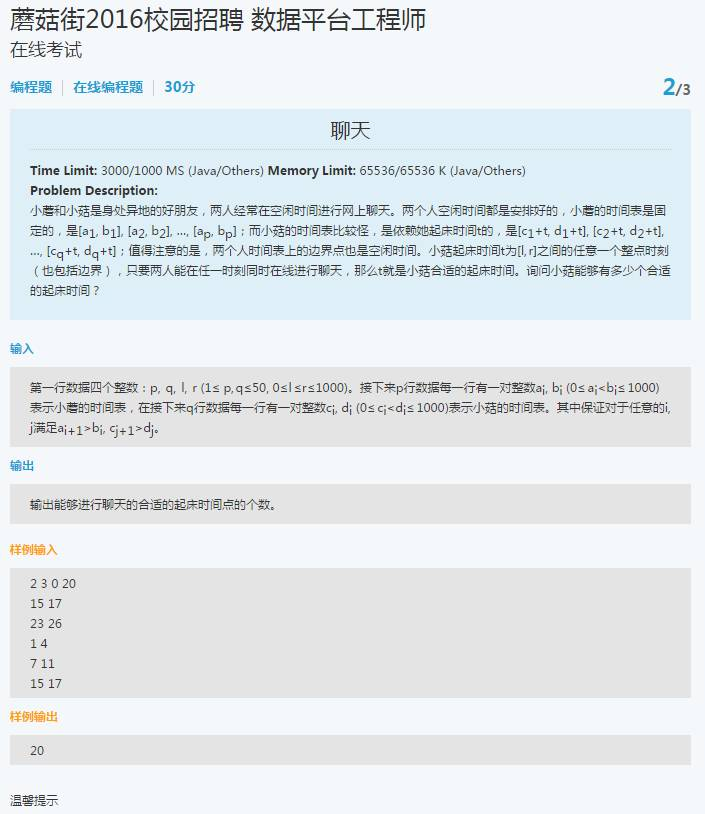
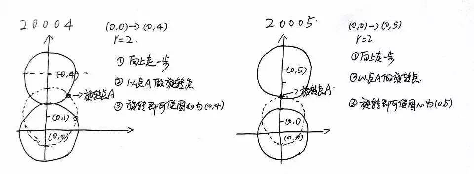

来自： IT草根
链接：http://codepub.cn/2015/09/23/2016-campus-recruitment-of-mushroom-street-programming-problem-resolution-technology/
NO1
解题思路：既然通过添加一个字母可以变为回文串，那么通过删除与添加的字母相对位置的字符，应该亦为回文串。
例如：
‘abcb’在末尾添加’a’ —> ‘abcba’为回文串
‘abcb’删除与想要添加的字符’a’对应位置的字符 —> ‘bcb’亦为回文串
‘aabbaab’在头部添加’b’ —> ‘baabbaab’为回文串
‘aabbaab’删除与想要添加的字符’b’对应位置的字符 —> ‘aabbaa’亦为回文串
Java算法实现：
import java.util.Scanner;
/**
* <p>
* Created with IntelliJ IDEA. 2015/9/23 13:35
* </p>
* <p>
* ClassName:Main
* </p>
* <p/>
* Description:给定一个串，通过添加一个字母将其变成“回文串”
* </P>
*
* @author Wang Xu
* @version V1.0.0
* @since V1.0.0
*/
public class Main {
final String Y = "YES";
final String N = "NO";
public String isPalindrome(String input) {
if (input == null || "".equals(input)) {
return Y;
}
int length = input.length();
//题目说明不超过10个字符，那么超过的话，直接返回NO
if (length > 10) {
return N;
}
StringBuilder sb = new StringBuilder(input);
for (int i = 0; i < length; i++) {
sb.deleteCharAt(i);
String temp = sb.toString();
if (sb.reverse().toString().equals(temp)) {
return Y;
} else {
sb = new StringBuilder(input);
continue;
}
}
return N;
}
public static void main(String[] args) {
Scanner cin = new Scanner(System.in);
String input;
while (cin.hasNext()) {
input = cin.next();
System.out.println(new Main().isPalindrome(input));
}
}
}

NO2
解题思路：
1、小蘑的时间假设为[a，b]，小菇的时间假设是[c+t，d+t]，小菇起床的时间是t∈[l，r]
2、那么当"a < b < (c+t) < (d+t)"或者"(c+t) < (d+t) < a < b"的情况时，小蘑和小菇无法聊天，由题目条件已知"a < b"和"c < d"，那么推出"(c+t) < (d+t)"
3、所以仅仅当"b < (c+t)"或者"(d+t) < a"时无法聊天，其余情况都是可以聊天的
Java算法实现：
import java.util.Scanner;
/**
* <p>
* Created with IntelliJ IDEA. 2015/9/23 13:35
* </p>
* <p>
* ClassName:Main2
* </p>
* <p/>
* Description:求小菇合适的起床时间，有一个非常奇葩的问题，在牛客网上测试，如果main中写
* <pre>
* Scanner cin = new Scanner(System.in);
* while (cin.hasNextInt()) {}//正确
* </pre>
* 写
* <pre>
* while(true){}//报错
* </pre>
* </P>
*
* @author Wang Xu
* @version V1.0.0
* @since V1.0.0
*/
public class Main2 {
private static void isLegal(int num, boolean flag) {
// flag为true标识判断[1,50]，flag为false标识判断[0,1000]
if (flag) {
if (!(1 <= num && num <= 50)) {
// System.out.println("数据非法");
System.exit(0);
}
} else {
if (!(0 <= num && num <= 1000)) {
// System.out.println("数据非法");
System.exit(0);
}
}
}
public static void main(String[] args) {
Scanner cin = new Scanner(System.in);
while (cin.hasNextInt()) {
int p = 0, q = 0, l = 0, r = 0;
p = cin.nextInt();
isLegal(p, true);
q = cin.nextInt();
isLegal(q, true);
l = cin.nextInt();
isLegal(l, false);
r = cin.nextInt();
isLegal(r, false);
int[] time_A_B = new int[p * 2];//标识小蘑的时间
int[] time_C_D = new int[q * 2];//标识小菇的时间
for (int i = 0; i < time_A_B.length; i++) {
// 接收p行的数据，每一行数据是一个时间对
int temp = cin.nextInt();
isLegal(temp, false);
time_A_B[i] = temp;
}
for (int i = 0; i < time_C_D.length; i++) {
int temp = cin.nextInt();
isLegal(temp, false);
time_C_D[i] = temp;
}
int count = 0;//标识小菇能有多少个合适的起床时间
begin:
for (int t = l; t <= r; t++) {
for (int i = 0; i < time_A_B.length; i += 2) {
for (int j = 0; j < time_C_D.length; j += 2) {
if (!(time_C_D[j] + t > time_A_B[i + 1] || time_C_D[j + 1] + t < time_A_B[i])) {
count++;
continue begin;
}
}
}
}
System.out.println(count);
}
}
}
NO2

解题思路：
1、length = sqrt((x1-x2)^2+(y1-y2)^2)先计算两个圆心点之间的距离
2、l参考上图，以(2 0 0 0 4)作为输入数据进行说明，当两个圆心点之间的距离lenght<(2*r+1)的时候，我们是不能够沿着两个圆心之间的连线进行移动的，而由两点之间直线最短，可知，沿两圆心的连线进行移动是最短的距离，换句话说，旋转一次移动的最长距离就是2*r，而在旋转之前需要先移动一步，所以阈值设为2*r+1
3、l那么当lenght<(2*r+1)的时候，我们该如何进行旋转呢？正确的做法是以(x1,y1)为圆心r为半径作圆，与以(x,y)为圆心的圆的交叉点就是支点，固定此点旋转即可
4、l根据以上的分析，再以(2 0 0 0 5)作为输入数据进行说明，当length>=(2*r+1)，那么length中有几个(2*r+1)，我们就需要走几步，如果相除不为整数，那么加1即可
Java算法实现：
import java.util.Scanner;
/**
* <p>
* Created with IntelliJ IDEA. 2015/9/23 16:54
* </p>
* <p>
* ClassName:Main3
* </p>
* <p/>
* Description:求圆桌移动到目标位置的步数
* </P>
*
* @author Wang Xu
* @version V1.0.0
* @since V1.0.0
*/
public class Main3 {
public static void main(String[] args) {
Scanner cin = new Scanner(System.in);
while (cin.hasNextInt()) {
int r = cin.nextInt();
if (r < 1 || r > 100000) {
System.exit(0);
}
int x = cin.nextInt();
int y = cin.nextInt();
int x1 = cin.nextInt();
int y1 = cin.nextInt();
if (x < -100000 || x > 100000) {
System.exit(0);
}
if (y < -100000 || y > 100000) {
System.exit(0);
}
if (x1 < -100000 || x1 > 100000) {
System.exit(0);
}
if (y1 < -100000 || y1 > 100000) {
System.exit(0);
}
double length = Math.sqrt(Math.pow(x - x1, 2) + Math.pow(y - y1, 2));
int count;
//向上取整之后强转为int型即可
count = (int) Math.ceil(length / (2 * r + 1));
System.out.println(count);
}
}
}
●本文编号83，以后想阅读这篇文章直接输入83即可。
●输入m可以获取到文章目录。

更多推荐请看《15个技术类公众微信》
涵盖：程序人生、算法与数据结构、黑客技术与网络安全、大数据技术、前端开发、Java、Python、Web开发、安卓开发、iOS开发、C/C++、.NET、Linux、数据库、运维等。传播计算机学习经验、推荐计算机优秀资源：点击前往《值得关注的15个技术类微信公众号》
音乐节详情，点击原文链接
![]()